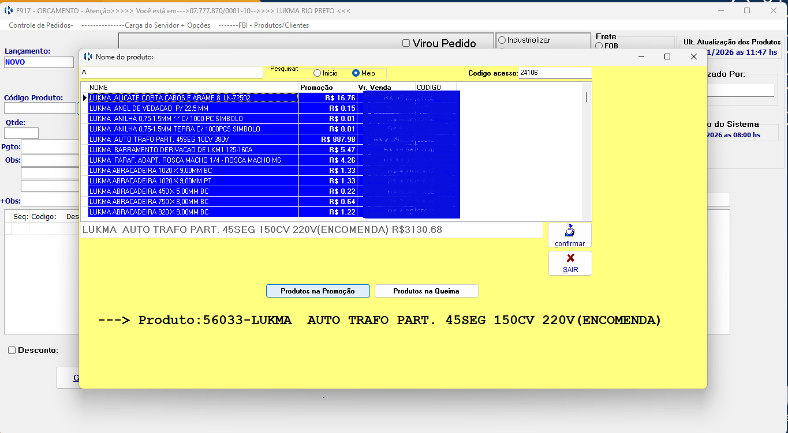
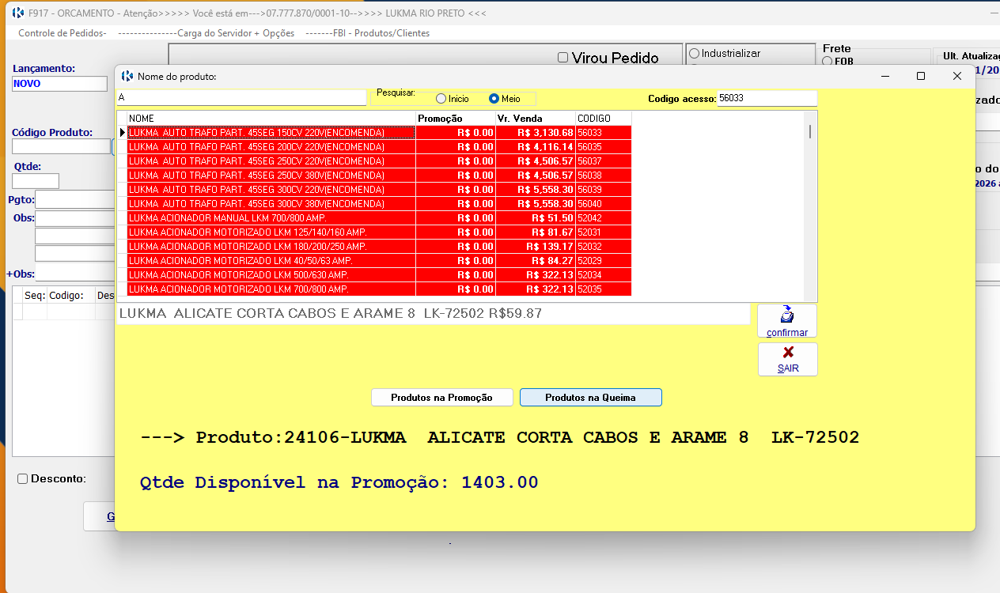

Como visualizar Promoções e Queimas.
Este tutorial explica como visualizar Promoções e Queimas no sistema Lukma.
Passo a passo
-
Ao Pesquisar um Produto você vai visualizar que tem dois botões (Promoção e Queima ) ou caso pesquisando se aparecer com a Cor Azul ou Vermelha.
Cor Azul: Produto em Promoção
Cor Vermelha: Produto em Queima de Estoque
Assim você pode filtrar e identificar os produtos que estão em promoção ou queima de estoque.


Em caso de erro de acesso, verifique seus dados ou entre em contato
com o suporte.